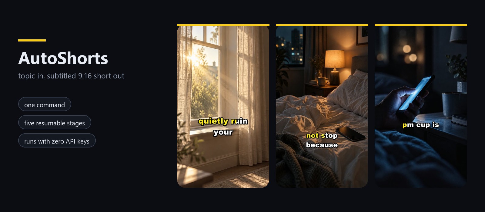
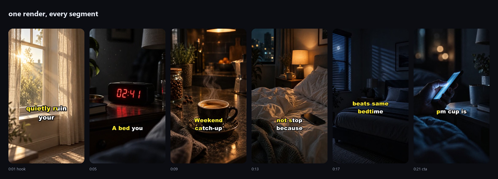
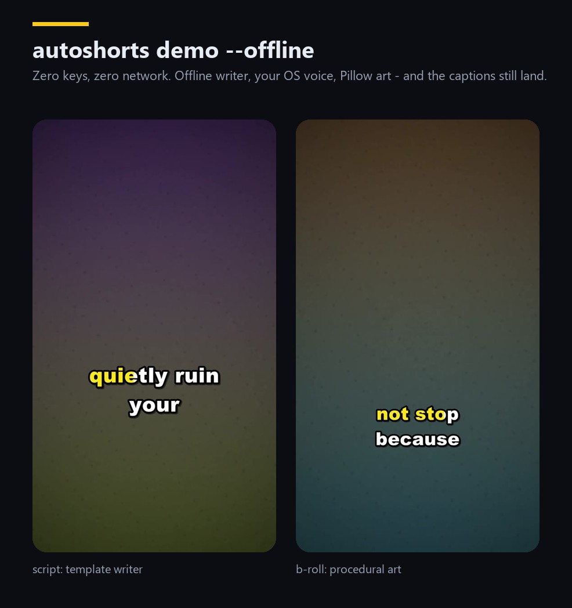
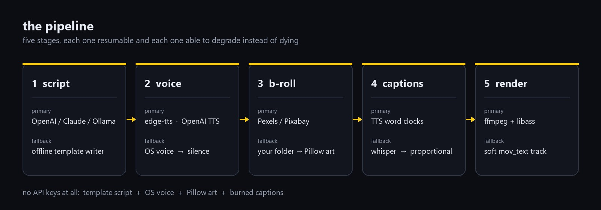

AutoShorts is a faceless-video factory: it writes a retention-optimised script,
voices it with a neural TTS, pulls royalty-free b-roll, times every word and burns
karaoke captions with ffmpeg. One .env, five resumable stages, and it still
finishes the render with zero API keys.
One command, no keys beyond a free edge-tts connection. Script, voice, b-roll,
word timings and the caption track were all produced by the pipeline — nothing was touched
in an editor. The six shots are stills sitting in LOCAL_CLIPS_DIR (generated with
an image model, then matched to each segment by file name); with a Pexels or Pixabay key the
same stage pulls real footage instead.

\kf tags, not a stack of images.

--offline: template script, your OS voice,
generated art, captions still burned in. Ugly enough to be honest — it exists so a render
never dies because a network did.This is the whole design bet: a pipeline that crashes because a key expired is a pipeline you stop using. Every stage has a fallback that needs nothing from the network.

OpenAI, Anthropic or a local Ollama model, prompted for hooks and thought boundaries. No key? A template writer still produces a structured, on-brief script.
edge-tts gives free neural voices with word timings. Otherwise OpenAI TTS, Piper, your OS voice, and finally silence so the render never stops.
Pexels then Pixabay by visual query, cached on disk. Falls back to your own assets/clips folder, then to generated art.
Word clocks come from TTS boundaries, then faster-whisper, then a proportional estimate — all rescaled onto the measured take length.
ffmpeg: per-segment clips with Ken Burns, loudness-normalised voice, ducked music, concat, libass burn-in — or a soft mov_text track if libass is missing.
Each stage writes its artefact into the job folder. Re-run with --force captions to restyle the subtitles without paying for the voice again.
Python 3.10 or newer. The [ffmpeg] extra fetches a static ffmpeg build,
which is the painless path on Windows.
git clone https://github.com/ck526438-lgtm/autoshorts.git
cd autoshorts
pip install -e ".[voice,ffmpeg]"
cp .env.example .env # everything in it is optional
autoshorts doctor # what it found, what it will fall back to
autoshorts demo --topic "3 habits that quietly ruin your sleep"Output is a JSON summary plus a job folder:
script.json, plan.json, captions.ass, work/ and
final.mp4.
A niche file is the channel brief — persona, audience, tone, hook styles, banned phrases, voice and duration. Batch mode feeds it a list of topics or an RSS feed and skips whatever is already rendered.
# one brief, reused for every video
autoshorts run --topic "why protein at breakfast matters" --niche examples/niches/finance.yaml
# a queue of topics, or an RSS feed of article titles
autoshorts batch --topics-file examples/topics.txt --niche examples/niches/productivite-fr.yaml --count 5
autoshorts batch --rss https://example.com/feed.xml --limit 3 --skip-existing
# paste your own script and let the pipeline do voice, b-roll and captions
autoshorts run --script my-script.md --duration 34| Extra | What it buys you |
|---|---|
[voice] | edge-tts — free neural voices with word-level timings. The recommended default. |
[ffmpeg] | A static ffmpeg via imageio-ffmpeg, no PATH surgery. |
[whisper] | faster-whisper alignment when your TTS engine reports no timings. |
[piper] | Fully offline neural voices, model files included. |
visual_query keywords — brand footage belongs in assets/clips.--offline uses your OS voice, and it sounds like it. It exists so a render never fails because a network did.AutoShorts makes synthetic video cheap, which is exactly why it should stay honest. TikTok, YouTube and Instagram all require labelling realistic AI-generated content, and monetisation can be withheld for mass-produced duplicate material. Nothing here fact-checks your script — a human has to read the claims before they reach a screen.